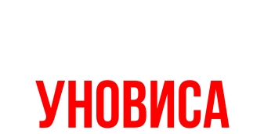
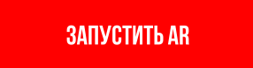

ВИТЕБСК
1920—1922
Наведите камеру смартфона на один из трёх плакатов и увидите, как авангард оживает в городской среде.

Подробнее о проекте
↓
МАРШРУТ НОВОГО ИСКУССТВА
Это маршрут по Витебску, который раскрывает наследие УНОВИСа через современный дизайн, городские плакаты и AR-взаимодействие.
Маршрут создан с целью показать знаковые места, связанные с авангардом, изучить исторические справки и взаимодействовать с визуальными объектами через цифровую среду.
ЧТО ТАКОЕ УНОВИС?
Это объединение художников, которое было создано в 1920 году в городе Витебске и его основал К. С. Малевич.
Участники стремились выйти за пределы традиционного искусства и создать новый визуальный язык, который связан с идеями авангарда, супрематизма и преобразования городской среды.
ПОЧЕМУ ЭТО ВАЖНО
Деятельность объединения УНОВИС — это часть культурной идентичности Витебска. Этот проект помогает вернуть авангард в городскую среду и показать его через современный визуальный язык: маршрут, плакаты и AR-взаимодействие.
Для стабильной работы требуется доступ к камере.
Работает в Safari / Chrome